iOS Clipboard — CapturasiOS Clipboard
Recorrido de las pantallas de la aplicación y el teclado. Capturas reales del simulador con datos de ejemplo. Pulsa una imagen para verla a tamaño completo.
Algunos emojis aparecen como cuadrados en este simulador.
01 · Bienvenida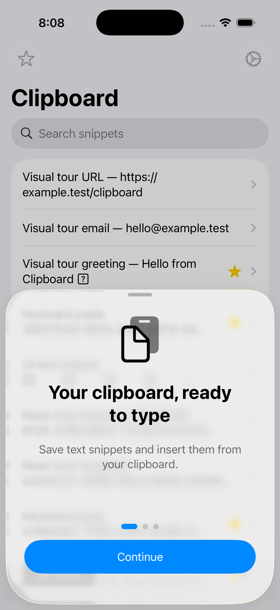
02 · Activar y cambiar de teclado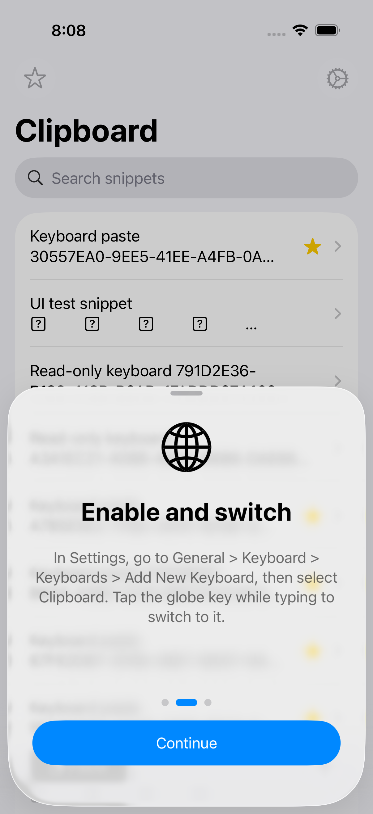
03 · Privacidad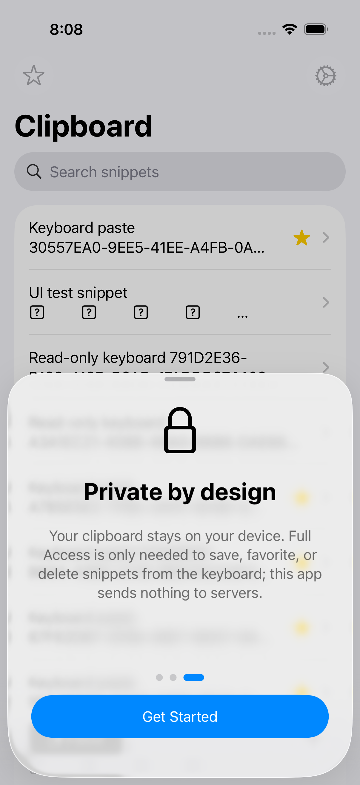
04 · Crear un snippet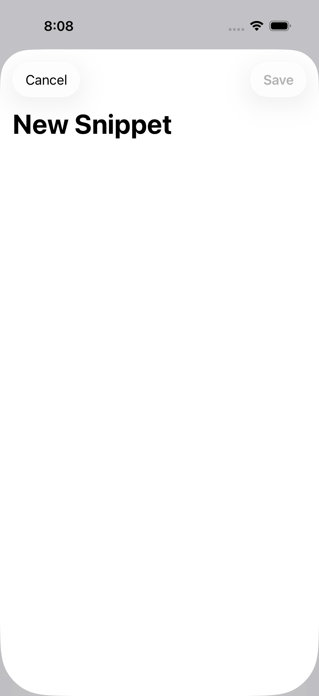
05 · Todos los snippets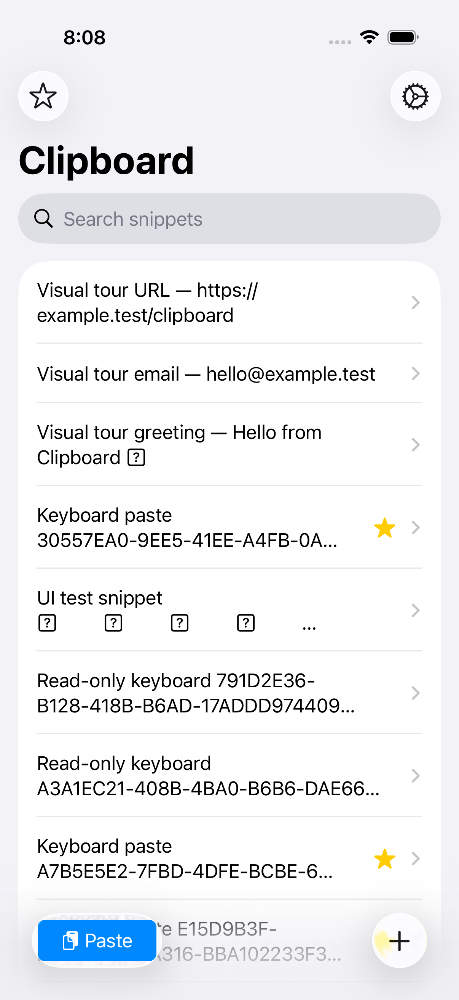
06 · Búsqueda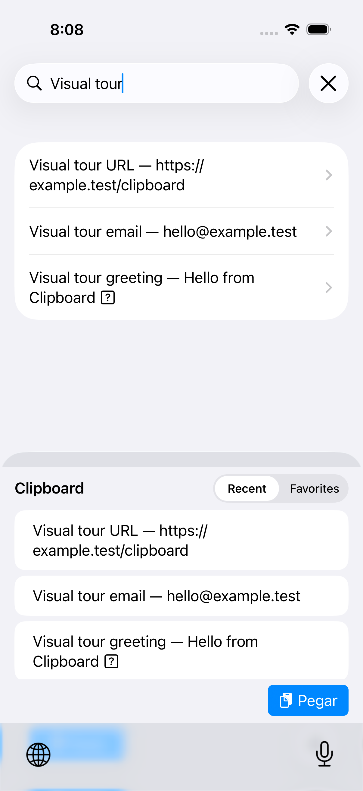
07 · Búsqueda sin resultados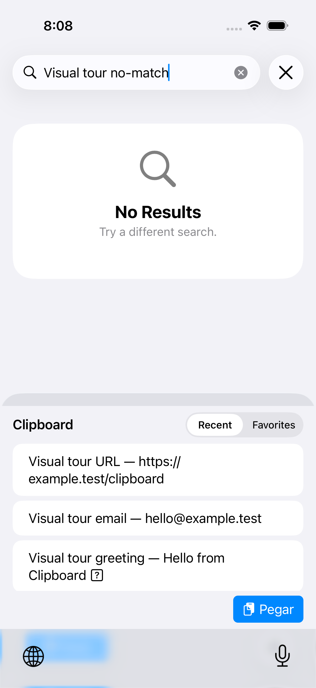
08 · Marcar como favorito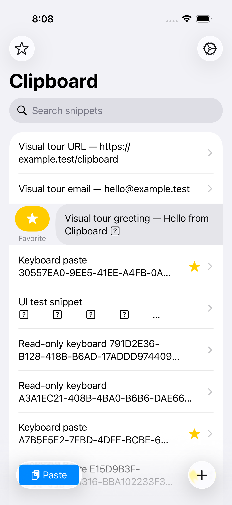
09 · Favoritos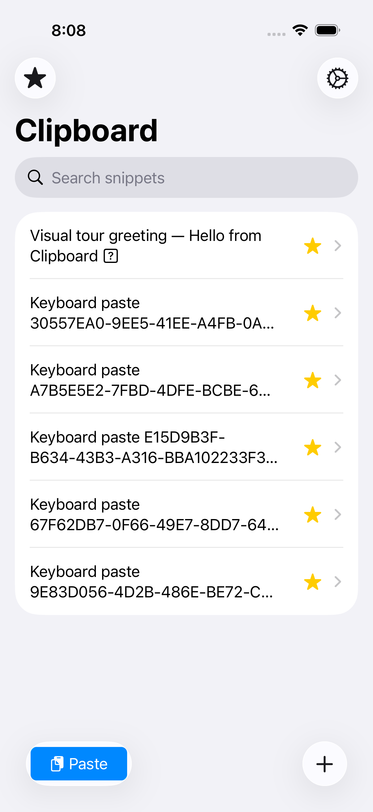
10 · Editar un snippet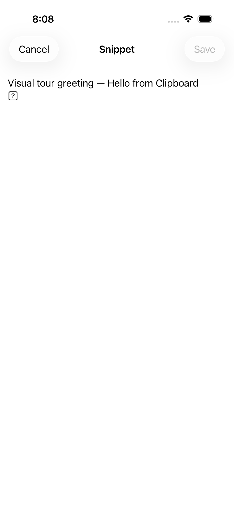
11 · Ajustes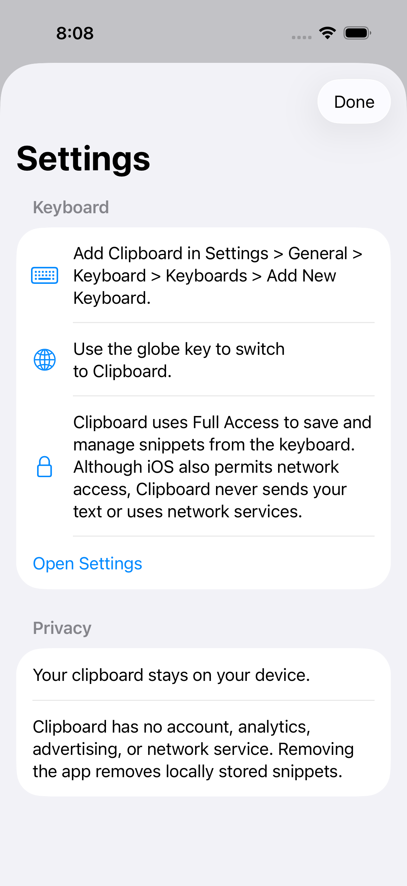
12 · Teclado: Recientes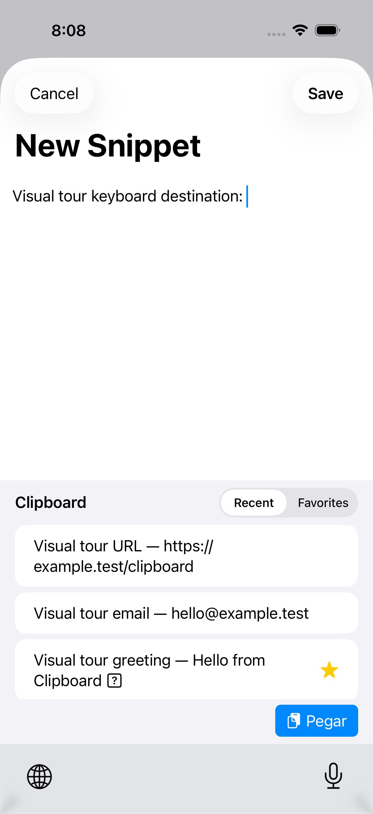
13 · Teclado: Favoritos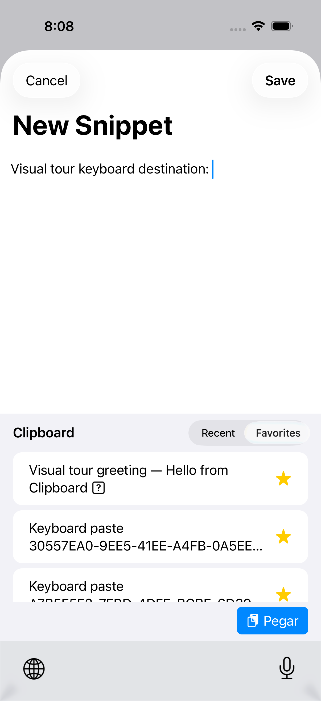
14 · Teclado en modo oscuro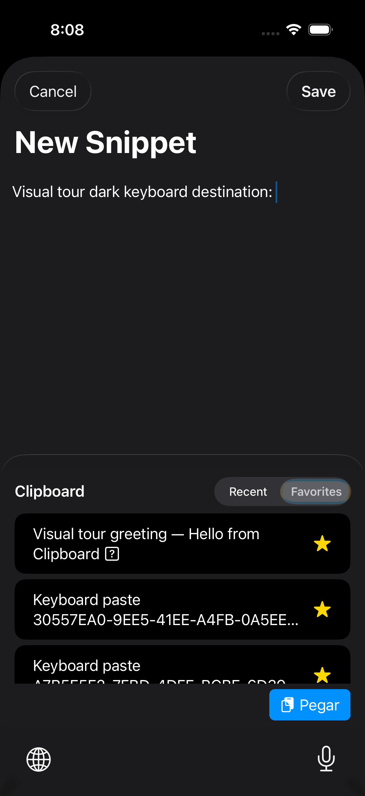
15 · Lista en modo oscuro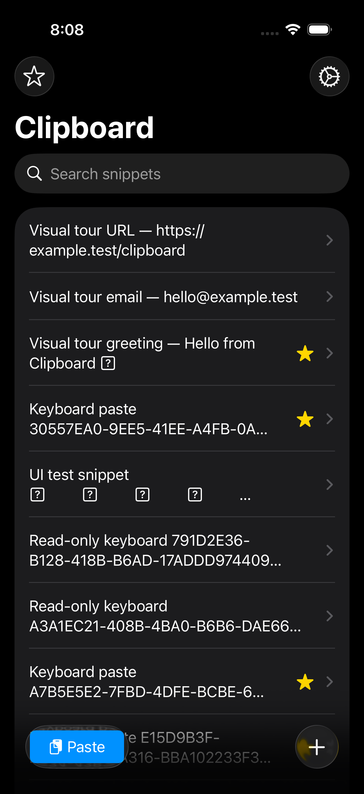
16 · Bienvenida en modo oscuro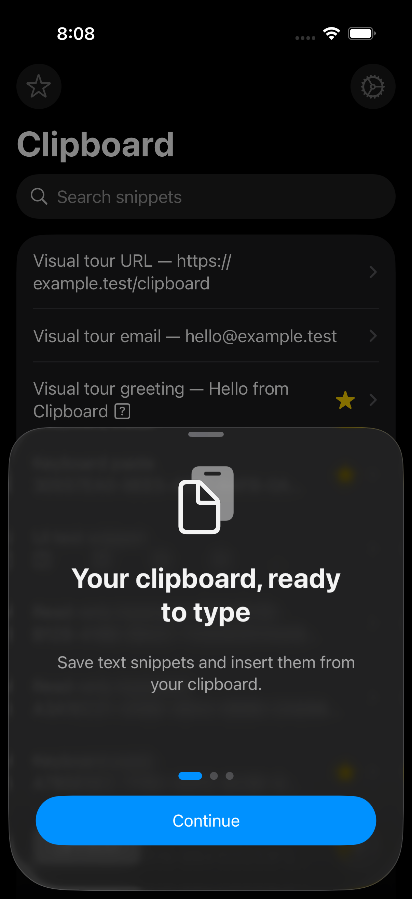